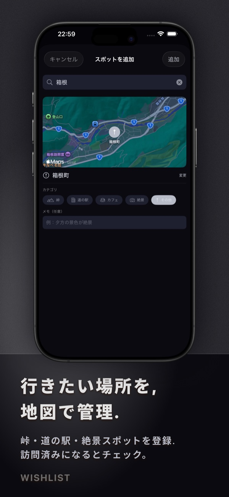
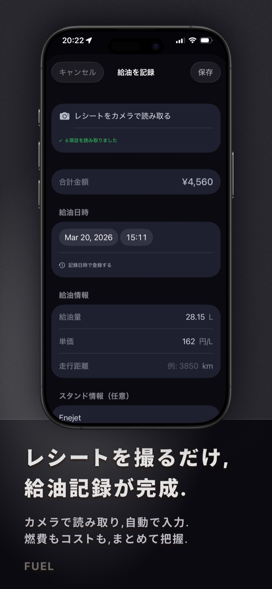

Marga
バイクツーリングの走行ルート・給油・行きたい場所を記録する iOS アプリ。
概要
走行ルート、給油の記録、行きたい場所のメモを 1 つのアプリにまとめた。地図・記録・給油・ウィッシュリストを行き来できる。
設計意図
走行中は iPhone を操作できないため、記録の開始と停止を Apple Watch から行えるようにした。iPhone と Watch のどちらから操作しても同じ処理を通る構成にし、記録が食い違わないようにした。
給油はレシートを撮影すると OCR で入力される。手入力の手間を減らし、記録を続けやすくするため。
地図上のルートは、記録中・過去・強調で色を分けた。過去のルートは不透明度を下げ、記録中のルートが埋もれないようにした。
名前はサンスクリット語の मार्ग（道）から。
主な機能
- ルート記録GPS で走行軌跡を記録し、エリア名を自動で付ける
- 給油管理給油量・単価・燃費を計算。レシートの OCR 入力
- ウィッシュリスト行きたい場所を地図で管理
- 統計月別の走行距離・燃費の推移
- 同期とバックアップiCloud 同期、JSON の書き出しと読み込み



